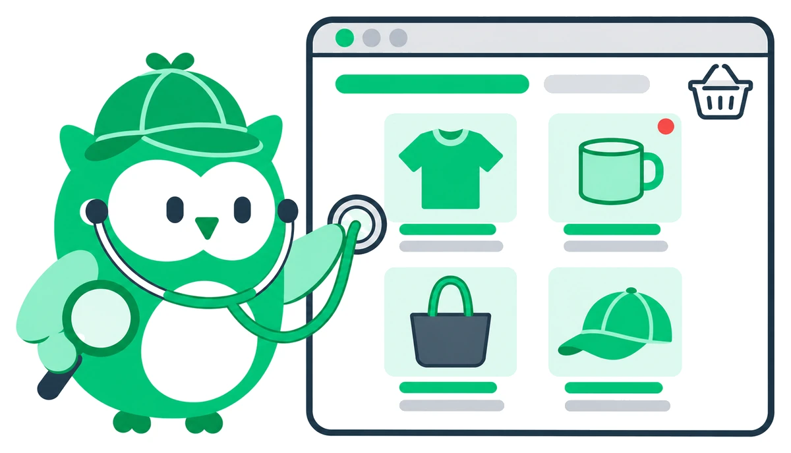
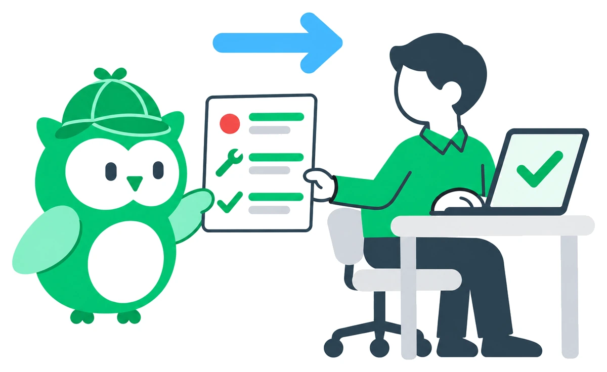

01特長
AIで広く調べ、
AIで広く調べ、
会員・決済まわりは診断員が手で試す。
診断専用のAIがサイトの入口を広く洗い出し、攻撃のシナリオを作ります。会員まわりや決済のような込み入った処理は、診断員が実際に手を動かして確かめます。
制作会社に任せたサイトの弱点を、第三者が攻撃者の目線で探します。
直し方までご報告するので、報告書をもとに制作会社へ修正を頼めます。
利用企業の7割が上場企業
ECサイトに穴があると、たとえばこんなことが起きます。
お客様はいつもどおり買い物をしただけなのに、被害にあいます。
番号を変えるだけで、他人の情報が開けてしまいます。
その間の売上は戻らず、おわびや連絡にも追われます。
そして、「この店で買って大丈夫か」と、
お客様の見る目が変わります。
開発や保守は制作会社に任せていて、中身が分からない。
制作会社に聞いても、どこをどう確かめたかまでは分からない。
社内に、セキュリティに詳しい人がいない。
リニューアルや決済まわりを変えたあと、大きなセールの前に、
一度、第三者の目で確かめておきませんか。

診断専用のAIがサイトの入口を広く洗い出し、攻撃のシナリオを作ります。会員まわりや決済のような込み入った処理は、診断員が実際に手を動かして確かめます。

見つかった弱点ごとに、具体的な直し方を提案します。どこをどう試したかもすべてお渡しするので、制作会社と同じ資料を見ながら修正を相談できます。問題が見つからなかった箇所も「調べて、問題がなかった」と分かるので、社内への説明にも使えます。

修正のあと、直した箇所が本当に直っているかを再診断で確かめます。再診断は、診断後1か月以内なら無料です。
利用企業の7割が上場企業


IssueHunt One（脆弱性診断・バグバウンティなど）の導入企業の一部です。
診断後、1週間ほどで報告書をお出しします。
サイトの概要と、気になっていることをお聞かせください。
診断する範囲を決め、費用と日程をお伝えします。
AIと診断員で検査します。
検査した内容・見つかった弱点・直し方を報告書でお伝えします。
直した箇所を、もう一度確かめます。
はい。見つかった弱点ごとに直し方をお伝えするので、その内容をもとに制作会社や保守会社と修正を進められます。
はい。制作会社やサーバー会社への事前の連絡が要るかどうかも含めて、ご相談のときに進め方をご案内します。
会員ページで他人の情報が見えてしまう穴、入力欄から不正なプログラムを送り込まれる穴、ログインの仕組みの弱さなどを、国際的な基準（OWASP Top 10など）に沿って調べます。
いいえ。AIが調べる場所と試し方を洗い出し、診断員がすべて確認します。会員・決済まわりの込み入った処理は、診断員が手で試します。
診断後、1週間ほどで報告書をお出しします。
調べる対象の数に応じたプランでご案内します。ご相談のうえでお見積もりをお出しします。ご相談は無料です。